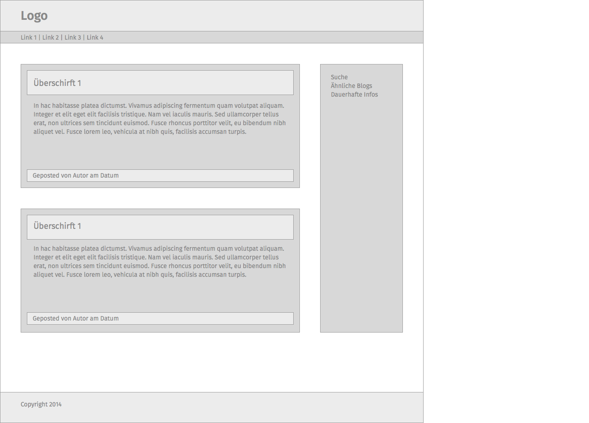
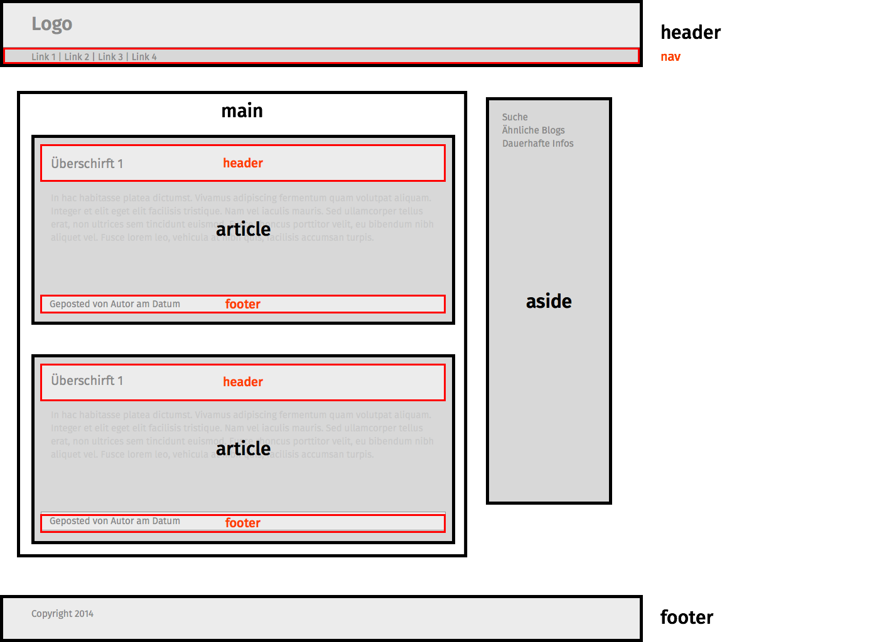

Einheit 2
Inhalt
Tags zur Strukturierung
Einführung CSS
Grundaufbau einer CSS-Datei
Einbindung von CSS-Dateien in HTML
Kommentare
Typografie
Farbe
Einfache Selektoren
Tags zur Strukturierung
Es gibt außer den Tags, die die Grundstruktur des HTML-Dokuments festlegen (<html>, <head>, <body>), dem Hyperlink-Tag (<a>) und den Tags zur Textauszeichnung (z. B. <h1>, <p>, <i>, <strong>, <time>) auch noch Tags zur Einteilung des Dokuments in verschiedene Bereiche.
Mit den Tags zur Textauszeichnung können wir den Inhalt eines Dokument sauber formatieren, aber eine Website ist noch mehr: Sie besteht aus verschiedenen Bereichen (Menü, Inhalt, Seitenleiste, …), nicht nur aus einem Fließtext. Das gilt natürlich besonders für Interfaceprototypen.
Deshalb gibt es verschiedene Tags, mit denen wir größere Bereiche markieren können. Die Tags bewirken von sich aus keine optische Veränderung, aber sie können später mit CSS gestylt werden und helfen dann dabei, ein Layout zu erstellen.
Wenn man eine Website oder einen Prototypen erstellt, geht man meistens wie folgt vor: Zuerst erstellt man einen Entwurf, dann überlegt man, aus welchen Bereichen dieser besteht, und überlegt sich eine Struktur. Diese erstellt man in HTML. Erst dann wird die Struktur mit Inhalt gefüllt, der anschließend formatiert wird.
 Das <nav>-Tag markiert die Navigation der Seite, also die Menüstruktur. Es darf mehrmals pro Seite eingesetzt werden, sollte aber möglichst nur einmal vorkommen.
Das <main>-Tag markiert den Hauptinhalt der Seite, also den Bereich, in dem der tatsächliche Inhalt steht. Es darf nur einmal pro Seite vorkommen.
Das <aside>-Tag kann als Pendant zum <main>-Tag verstanden werden; in diesem Fall markiert es einen weniger relevanten Teil der Seite, zum Beispiel eine Seitenleiste. Das muss es aber nicht: Es kann sich auch innerhalb des main-Tags befinden, und zum Beispiel die Anmerkungen zu einem Text enthalten.
Das <header>-Tag markiert einen Kopfabschnitt. Dies kann sowohl der Kopfabschnitt der Seite sein, also Informationen die auf jeder Seite stehen (es könnte zum Bespiel ein <nav>-Tag mit Navigation enthalten), als auch der Kopfteil eines Abschnittes (also zum Beispiel den Teil eines Blogeintrags, der den Titel und einen ersten hervorgehobenen Abschnitt o. ä. enthält). Es darf beliebig oft auf der Seite vorkommen.
Dasselbe gilt für das <footer>-Tag: Es markiert ein Fußelement und darf beliebig oft vorkommen.
Das <article>-Tag markiert einen größeren Inhaltsabschnitt einer Seite, also zum Beispiel ein Kapitel, einen Blogeintrag oder einen längeren Abschnitt.
Das <section>-Tag wird oft missverstanden: Es markiert nicht einen größeren Bereich einer Seite, wie den Inhaltsbereich o. ä., sondern einen Abschnitt eines größeren Elements (also zum Beispiel ein Unterkapitel, oder bei einer einer Liste von Profilen mit mehreren Informationen zu jedem Profil die einzelnen Profile. Die gesamte Liste könnte dann zum Beispiel ein <article>-Element sein).
Die Struktur der oben skizzierten Seite (mit ein paar Beispielinhalten) würde also folgendermaßen aussehen:
<!DOCTYPE HTML>
<html>
<head>
<title>Beispielstruktur</title>
<meta charset="utf-8">
</head>
<body>
<header>
<p>Logo</p>
<nav>
<a href="#">Link 1</a> |
<a href="#">Link 2</a> |
<a href="#">Link 3</a> |
<a href="#">Link 4</a>
</nav>
</header>
<main>
<article>
<header>
<h1>Überschrift 1</h1>
<p>Von Max Mustermann</p>
</header>
<p>
In hac habitasse platea dictumst. Vivamus adipiscing fermentum quam volutpat aliquam. Integer et elit eget elit facilisis tristique. Nam vel iaculis mauris. Sed ullamcorper tellus erat, non ultrices sem tincidunt euismod. Fusce rhoncus porttitor velit, eu bibendum nibh aliquet vel. Fusce lorem leo, vehicula at nibh quis, facilisis accumsan turpis.
</p>
<footer>
<p>Gepostet um 19:14 in Beispiele</p>
</footer>
</article>
<article>
<header>
<h1>Überschrift 1</h1>
<p>Von Max Mustermann</p>
</header>
<p>
In hac habitasse platea dictumst. Vivamus adipiscing fermentum quam volutpat aliquam. Integer et elit eget elit facilisis tristique. Nam vel iaculis mauris. Sed ullamcorper tellus erat, non ultrices sem tincidunt euismod. Fusce rhoncus porttitor velit, eu bibendum nibh aliquet vel. Fusce lorem leo, vehicula at nibh quis, facilisis accumsan turpis.
</p>
<footer>
<p>Gepostet um 19:14 in Beispiele</p>
</footer>
</article>
</main>
<aside>
<h1>Seitenleiste:</h1>
<ul>
<li>Suche</li>
<li>Ähnliche Blogs</li>
<li>Dauerhafte Infos</li>
</ul>
</aside>
<footer>
<p>Copyright 2014</p>
</footer>
</body>
</html>
Einführung CSS
HTML war ursprünglich nur für die Formatierung wissenschaftlicher Textdokumente gedacht, wurde aber bereits nach kurzer Zeit zum Erstellen von Homepages nach heutigem Verständnis verwendet. Dabei wurde das Aussehen der Seite durch verschiedene Tags innerhalb des HTML-Codes verändert. Diese Art Websites zu erstellen führte zu einem extrem unübersichtlichen, redundanten Code. Deshalb wurde 1993 CSS entwickelt, das 1996 zum Standard erklärt wurde. CSS steht für „Cascading Style Sheets“. Es handelt sich dabei um eine Sprache, mit der das Aussehen von HTML-Tags beeinflusst werden kann.
Heute definiert man in seinem HTML-Dokument also nur noch die Struktur der Website (mit Hilfe der oben genannten Strukturtags) sowie die Art des Inhalts (mit Hilfe der Tags zur Textauszeichnung – also z. B. <h1> als „Überschrift ersten Grades“). In der CSS-Datei (auch „Stylesheet“ genannt) definiert man dann, wie die verschiedenen Tags vom Browser dargestellt werden sollen (also z. B. „Das Tag <h1> soll die Schriftgröße 30px, den Zeilenabstand 35px und den Schriftschnitt bold bewirken“). Dabei ist man völlig frei und muss sich an keine Vorgaben halten (man könnte also z. B. definieren, dass <h1> in einer kleineren Schriftgröße angezeigt wird als <h2>).
Dass <h1> bereits bei reinen HTML-Dokumenten bewirkte, dass der damit ausgezeichnete Text größer dargestellt wurde, liegt daran, dass der Browser bereits von sich aus eine eingebaute CSS-Datei besitzt, die das Aussehen einiger HTML-Tags vorbestimmt. Rein theoretisch würde kein HTML-Tag eine optische Veränderung bewirken. Die vom Browser vorgegebene CSS-Datei wird von eigenen CSS-Dateien überschrieben.
Nicht ganz genau dem im vorletzten Abschnitt genannten Schema entsprechen die Tags zur Textauszeichnung, die bereits nach einer optischen Veränderung benannt sind (also z. B. <b> wie „bold“) – das vorgegebene Aussehen dieser Tags mit CSS zu verändern, ist zwar möglich, hat aber keinen Sinn.
Grundaufbau einer CSS-Datei
Anders als bei einem HTML-Dokument gibt es bei CSS-Dateien keine Grundstruktur, die in jeder Datei vorhanden sein muss. Stylesheets enthalten einfach eine Aneinanderreihung verschiedener Aussehensdefinitionen. Diese werden folgendermaßen erstellt:
Selektor {
Eigenschaft: Wert;
Eigenschaft: Wert;
}
Mit einem Selektor wird das zu formatierende HTML-Tag ausgewählt. Dann folgt in geschweiften Klammern die Aussehensdefinition: Die Eigenschaft, die verändert werden soll, wird aufgeführt, dann folgt nach einem Doppelpunkt der gewünschte Wert. Die Zeile wird abgeschlossen mit einem Semikolon. So können untereinander beliebig viele Eigenschaften definiert werden.
Es gibt für verschiedene optische Eigenschaften vorgegebene Eigenschaftsnamen mit vorgegebenen möglichen Werten. Diese werden im Laufe des Kurses vorgestellt.
Soll dass <h1>-Tag formatiert werden, könnte das also zum Beispiel wie folgt aussehen:
h1 {
font-size: 30px;
line-height: 35px;
font-weight: bold;
}
Hier werden alle im Dokument vorkommenden <h1>-Tags ausgewählt, die Eigenschaft font-size (Schriftgröße) auf 30px gesetzt, die Eigenschaft line-height (Zeilenabstand) auf 35px gesetzt und die Eigenschaft font-weight (Schriftdicke) auf bold gesetzt.
Sollte nun auch noch das <h2>-Tag gestylt werden, so würde diese Definition einfach darunter gesetzt werden. Die gesamte CSS-Datei sähe dann folgendermaßen aus:
h1 {
font-size: 30px;
line-height: 35px;
font-weight: bold;
}
h2 {
font-size: 24px;
line-height: 28px;
font-weight: bold;
}
Kommentare
In CSS gibt es nur eine Art von Kommentar, dieser kann einzeilig oder mehrzeilig sein. Das öffnende Tag ist dabei /* das schließende */.
/* Kommentar */
Einbindung von CSS-Dateien in HTML
Um CSS-Code in die HTML Datei einzubinden, gibt es zwei Möglichkeiten. Die erste ist es, den CSS-Code direkt in das HTML-Dokument zu schreiben. Er wird dabei mit dem <style>-Tag ausgezeichnet.
<style>
Selektor {
Eigenschaft: Wert;
Eigenschaft: Wert;
}
</style>
Diese Art CSS-Code einzubinden funktioniert, wenn man nur einzelne Elemente stylen möchte. Bei einer normalen Website wird der CSS-Code aber schnell mehre hundert Zeilen lang. Dann wird das HTML-Dokument unübersichtlich und der Sinn der strengen Trennung zwischen Inhalt und Optik durch HTML und CSS geht vollkommen verloren.
Deshalb empfiehlt es sich immer die zweite Möglichkeit zu nutzen: dabei wird der CSS-Code in eine eigene Datei geschrieben (diese heißt in der Regel „style.css“) und diese wird dann mit Hilfe der folgenden Zeile in den HTML-Code eingebunden:
<link rel="stylesheet" type="text/css" href="style.css">
Diese Zeile wird in den <head>-Bereich des HTML-Dokuments eingefügt. Das Attribut href erhält dabei als Wert den relativen Pfad zu der CSS-Datei. Im Code-Beispiel oben würde also die Datei „style.css“, die sich im selben Verzeichnis wie das HTML-Dokument befindet, eingebunden werden.
Typografie
Um die typografischen Eigenschaften des Textes zu verändern, der sich innerhalb eines bestimmten Tags befindet, gibt es in CSS folgende Eigenschaften:
font-family: "Fira Sans", Helvetica, Arial, sans-serif;
Mit font-family wird die Schriftfamilie angegeben. Dabei kann eine Liste von möglichen Schriften angegeben werden, die der Browser von links nach rechts ausprobiert. Hat der Nutzer die erstgenannte Schrift nicht installiert, wird also nach der zweiten gesucht usw. Als letzter Wert der Auflistung sollte immer die Schriftklasse, also serif, sans-serif oder monospace angegeben werden. Wird keine der genannten Schriftarten gefunden, benutzt der Browser die Standardschriftart aus dieser Schriftklasse. Enthält der Name der Schriftfamilie ein Leerzeichen, so muss sie in Zollstrichen (") geschrieben werden.
font-size: 14px;
line-height: 16px;
Mit font-size wird die Schriftgröße, mit line-height der Zeilenabstand angegeben. Für den Moment sollten als Werte nur Pixelangaben verwendet werden; mehr Informationen zu Größeneinheiten in CSS folgen in einer späteren Einheit.
font-weight: normal;
font-style: regular;
font-weight definiert die Schriftdicke. Dabei kann als Wert normal, thin, bold, oder eine Zahl (300, 400, 500, …) verwendet werden, je nachdem, welche Schriftschnitte die Schriftfamilie besitzt.
Mit font-style wird der Schriftstil angegeben. Mögliche Werte sind normal, italic oder oblique.
text-decoration: none;
Mit text-decoration können bestimmte Textauszeichnungen festgelegt werden. Die Werte die verwendet werden können, sind none, overline, line-through oder underline.
text-align: left;
text-align legt die horizontale Ausrichtung des Textes fest. Mögliche Werte sind left, center, right und justify (Blocksatz).
color: black;
Die Eigenschaft color definiert die Schriftfarbe. Dabei kann jede Farbe, die in einem CSS-Farbformat angegeben ist, verwendet werden. Mehr zu Farben siehe unten.
Möchte man also, dass aller Text, der sich innerhalb des <body>-Tags befindet, formatiert wird, würde man folgendes in seine CSS-Datei schreiben:
body {
font-family: "Fira Sans", Helvetica, Arial, sans-serif;
font-size: 14px;
line-height: 16px;
font-weight: normal;
font-style: regular;
text-align: left;
text-decoration: none;
color: black;
}Farbe
Um Farben in CSS anzugeben, gibt es verschiedene Möglichkeiten.
Die erste ist es, einfach den englischen Farbbegriff zu schreiben, also black, red, blue, usw. Dabei ist man aber auf sehr wenige Farben beschränkt, deshalb wird diese Methode kaum angewendet.
Die zweite Möglichkeit eine Farbe anzugeben ist der „Hex-Code“. Dabei wird die Farbe als sechsstellige Zahl im hexadezimalen Format angegeben (mögliche Ziffern sind als 0 bis 9, sowie A bis F). Je zwei Ziffern geben den Wert für Rot, Grün bzw. Blau an (zwei hexadezimale Ziffern ermöglichen alle Zahlen von 0 bis – dezimal ausgedrückt – 255). Am Anfang des Hex-Codes steht immer „#“.
Schwarz würde demnach als #000000 angegeben werden, weiß als #FFFFFF, rot als #FF0000, türkis als #00FFFF, usw.; #A036A3 wäre beispielsweise ein dunkler Lilaton. Hex-Werte können direkt aus dem Colorpicker bei Photoshop o. ä. kopiert werden.
Die dritte Möglichkeit besteht darin, Farben als RGBA anzugeben. Dabei kann für rot, grün und blau je eine Ganzzahl zwischen 0 und 255, für Alpha eine Zahl zwischen 0 und 1 angegeben werden. RGBA-Werte werden folgendermaßen definiert:
rgba(255, 255, 255, 1);
Diese Schreibweise bietet sich an, da es einfacher ist, aus den Zahlen die Farbe abzuleiten als bei Hex-Code und es zusätzlich möglich ist, eine Transparenz anzugeben; halbtransparente Hintergründe sind damit also möglich.
Die Farbwerte können zum Angeben der Schriftfarbe mit der Eigenschaft color verwendet werden. Außerdem kann mit Hilfe der Eigenschaft background-color die Hintergrundfarbe von Elementen beeinflusst werden:
article {
color: #FF0000;
background-color: rgba(0,255,0,1);
}
footer {
color: rgba(255,0,111,1);
background-color: #0000FF;
}Einfache Selektoren
Bis jetzt haben wir bei CSS als Selektor immer nur ein einzelnes Tag angegeben (ohne spitze Klammern). Damit wird das Aussehen jedes Elements im HTML-Dokument, das mit diesem Tag ausgezeichnet ist, definiert.
h1 {
color: #FF0000;
}Dieser Code bewirkt also, dass jede Überschrift ersten Grades im gesamten Dokuments rot dargestellt wird.
Es gibt aber eine Vielzahl an Möglichkeiten, den Selektor spezifischer zu formulieren.
Die am häufigsten verwendete ist es, mehrere Tags mit Leerzeichen getrennt anzugeben. Dabei werden nur die Elemente, die mit dem ganz rechts stehenden Tag ausgezeichnet sind im HTML-Dokument ausgewählt, die sich innerhalb des Tags, das links davon steht befinden ausgewählt.
header h1 {
color: #FF0000;
}Dieser Code bewirkt also, dass nur die Überschriften ersten Grades rot dargestellt werden, die sich innerhalb eines <header>-Tags befinden. Alle anderen Überschriften ersten Grades, also zum Beispiel die im <main>-Tag oder im <footer>-Tag, bleiben davon unberührt.
Dabei lassen sich beliebig viele Tags aneinander reihen:
article p strong {
color: #FF0000;
}Damit wird der Inhalt aller <strong>-Tags rot dargestellt, die sich innerhalb eines <p>-Tags befinden, das sich innerhalb eines <article>-Tags befindet.
Es ist dabei egal, ob das Element, innerhalb dessen sich das auszuwählende Tag befinden muss, das direkte Elternelement des Tags ist.
article li {
color: #FF0000;
}Dieser Code wählt also alle <li>-Tags innerhalb von <article>-Tags aus, auch wenn die <li>-Elemente zusätzlich auch noch von <ul>-Elementen umgeben sind, und erst diese sich dann direkt im <article>-Element befinden.
Mehrere Selektoren können auf einmal ausgewählt werden, indem sie mit einem Komma aneinander gereiht werden.
h1, h2 {
color: #FF0000;
}Dieser Code färbt also alle Überschriften ersten Grades und alle Überschriften zweiten Grades ein.
Selbstverständlich können auch die Selektoren aneinander gereiht werden, die aus mehreren Tags bestehen:
header h1, footer h2 {
color: #FF0000;
}Dieser Code färbt also alle Überschriften ersten Grades ein, die sich in einem <header>-Element befinden, sowie alle Überschriften zweiten Grades, die sich in einem <footer>-Element befinden.